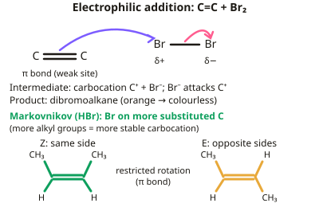

A-level Chemistry Year 12 · Topic 6
Alkenes, alcohols, analysis and synthesis
Alkenes, alcohols, analysis and synthesis builds your organic chemistry toolkit.
We will study how alkenes react by electrophilic addition, how alcohols are oxidised and dehydrated, and how chemists identify compounds using chemical tests, infrared spectroscopy and mass spectrometry.
Finally we put it all together to plan multi-step synthetic routes between functional groups.
- 9 subtopics
- 235 questions
- Free: 6.1 notes and 10 questions
In this topic
- 6.1AlkenesFree below · 25 questions
- 6.2AlcoholsOpen in Full Marks · 25 questions
- 6.3Organic analysisOpen in Full Marks · 59 questions
- 6.4Infrared absorption, bond vibrations and the greenhouse effectOpen in Full Marks · 16 questions
- 6.5Organic synthesis: reaction pathways and multi-step routes between functional groupsOpen in Full Marks · 21 questions
- 6.6Carbonyl compounds: aldehydes and ketones, their reactions and testsOpen in Full Marks · 21 questions
- 6.7Carboxylic acids and esters: making acids, their reactions, esterification and hydrolysisOpen in Full Marks · 32 questions
- 6.8Nitrogen compounds at AS: primary amines, nitriles and hydroxynitrilesOpen in Full Marks · 22 questions
- 6.9Addition polymers: poly(alkenes), PVC, identifying monomers and disposing of polymersOpen in Full Marks · 14 questions
6.1 · Free notes
Alkenes

Key points
- Alkenes contain at least one C=C double bond, made of a sigma and a pi bond; the weaker pi bond is the site of reactivity.
- Electrophilic addition: alkenes react with electrophiles, e.g. bromine (decolourising bromine water), hydrogen (with a nickel catalyst), and hydrogen halides.
- Markovnikov's rule: with an unsymmetrical alkene and reagent like HBr, the major product has the halogen on the more substituted carbon, since the more stable carbocation forms preferentially.
- E/Z isomerism occurs due to restricted rotation around the C=C bond; each double-bond carbon must have two different groups attached for E/Z isomers to exist.
In more detail
- Mechanism with HBr: the π electrons attack Hδ+ (curly arrow from C=C to H), the H–Br bond breaks (arrow to Br), a carbocation forms, then Br⁻ attacks it with its lone pair.
- Carbocation stability: tertiary > secondary > primary, because alkyl groups push electrons towards the positive carbon; the more stable carbocation leads to the major product.
- E/Z naming: use CIP priorities (higher atomic number = higher priority) on each carbon; Z = higher priorities on the same side, E = opposite sides.
- Addition polymers: poly(chloroethene) (PVC), poly(propene) and PTFE; they are unreactive and non-biodegradable, so disposal is by recycling, incineration (with energy recovery) or feedstock recycling.
Practice
Alkenes: 10 questions
Pick an answer to check it, or open the answer for the explanation.
1. What type of reaction do alkenes undergo with bromine?
- Nucleophilic substitution
- Electrophilic addition
- Elimination
- Free radical substitution
Show answer
B: Electrophilic addition. The pi bond electrons attack the electrophilic bromine molecule.
2. What is the test for an alkene using bromine water?
- Turns blue
- Orange to colourless
- Produces a gas
- No change
Show answer
B: Orange to colourless. Alkanes do not decolourise bromine water this way.
3. What type of bond is broken when an alkene reacts with an electrophile?
- The sigma bond
- The pi bond
- An ionic bond
- A hydrogen bond
Show answer
B: The pi bond. The weaker pi bond breaks, while the sigma bond remains.
4. According to Markovnikov's rule, the bromine from HBr ends up on:
- The more substituted carbon (fewer hydrogens)
- The less substituted carbon (more hydrogens)
- Either carbon equally
- Neither carbon
Show answer
A: The more substituted carbon (fewer hydrogens). The more stable carbocation intermediate directs the major product.
5. What is needed for E/Z isomerism to exist in an alkene?
- Both double-bond carbons must have two different groups attached
- The alkene must be symmetrical
- The molecule must contain a halogen
- No rotation must be possible around any bond
Show answer
A: Both double-bond carbons must have two different groups attached. If either carbon has two identical groups, E/Z isomerism isn't possible.
6. What is formed when ethene reacts with steam and a phosphoric acid catalyst?
- Ethane
- Ethanol
- Ethanoic acid
- Poly(ethene)
Show answer
B: Ethanol. This is the industrial method of producing ethanol from crude oil derivatives.
7. How many σ and π bonds are there in a molecule of propene, CH₃CH=CH₂?
- 9 σ and 1 π
- 7 σ and 2 π
- 8 σ and 1 π
- 6 σ and 1 π
Show answer
C: 8 σ and 1 π. There are 6 C–H σ bonds, 1 C–C σ bond and the σ bond of C=C, giving 8 σ. The C=C double bond also contains one π bond.
8. How many moles of H₂ react fully with 1 mol of buta-1,3-diene (CH₂=CH–CH=CH₂) over a nickel catalyst?
- 1
- 3
- 2
- 4
Show answer
C: 2. Each C=C bond adds one H₂. Buta-1,3-diene has two C=C bonds, so it needs 2 mol H₂ to form butane.
9. 2.80 g of ethene (Mᵣ = 28.0) reacts fully with bromine. What mass of 1,2-dibromoethane (Mᵣ = 188) forms?
- 18.8 g
- 5.6 g
- 37.6 g
- 9.4 g
Show answer
A: 18.8 g. 2.80 g is 0.100 mol ethene. The ratio is 1:1, so 0.100 mol product has mass 0.100 × 188 = 18.8 g.
10. Which alkene shows E/Z isomerism?
- Propene
- But-2-ene
- 2-methylpropene
- But-1-ene
Show answer
B: But-2-ene. Only but-2-ene has two different groups (H and CH₃) on each C=C carbon. The others have two identical groups on one carbon.
Keep going in Full Marks
Full Marks has 25 questions on Alkenes (15 more than here), set out in practice levels. You also get notes and 3D models for all 9 subtopics of Alkenes, alcohols, analysis and synthesis, plus games, timed exams and past papers.
On your exam board
- AQATopic 3.3.4: Alkenes, Topic 3.3.5: Alcohols, Topic 3.3.6: Organic analysis
- OCR ATopic 4.1.3: Alkenes, Topic 4.2.1: Alcohols, Topic 4.2.3: Organic synthesis, Topic 4.2.4: Analytical techniques
- OCR BTopic DF: Developing fuels, Topic OZ: The ozone story, Topic WM: What's in a medicine?
- EdexcelTopic 6: Organic chemistry I, Topic 7: Modern analytical techniques I
- CambridgeTopic 14: Hydrocarbons, Topic 16: Hydroxy compounds, Topic 17: Carbonyl compounds, Topic 18: Carboxylic acids and derivatives, Topic 19: Nitrogen compounds, Topic 20: Polymerisation, Topic 21: Organic synthesis, Topic 22: Analytical techniques